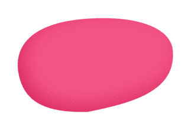
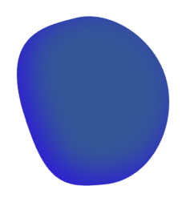
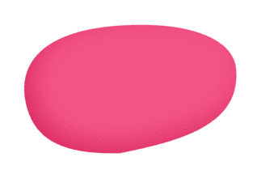
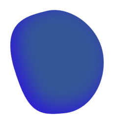
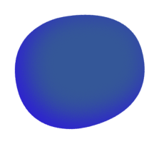
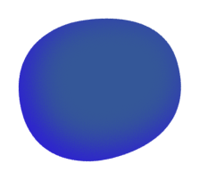

 



Casa da Vó Micas
Vila Nova
Lomba do Rei – Turismo Rural
Lomba do Rei
Mountain Whisper
Gondramaz
Casinha do México
Gondramaz
Sete Quintas
Miranda do Corvo
D'Albarrol
Albarrol
Hotel Quinta do Viso
Miranda do Corvo
Hotel Parque Serra da Lousã
Miranda do Corvo
Corvo Typical Village Houses AL
Corvo
Quinta Mata da Sé
Lamas
Quinta Dona Iria
Rio de Vide
Casa das Merendeiras
Espinhal
Casa Bela Vista
Fetais
Castel Creative Living - "O Hostel"
Penela
Duecitânia
Penela
Sicó In Out
Penela
Casa da Vitória
Bajancas Fundeiras
Os portadores de passe geral têm acesso ao campismo durante todo o festival. Os bilhetes diários têm acesso ao campismo das 8h00 da manhã do dia
correspondente às 12h00 do dia seguinte. A área de campismo é limitada ao espaço existente.
Viajar em qualquer expresso com destino a Coimbra e, já em Coimbra, apanhar o autocarro que faz a ligação para Miranda do Corvo. Em Miranda do Corvo apanhar boleia ou táxi para Vila Nova.
Viajar até à estação de Coimbra (comboio regional) ou Coimbra-B (comboio intercidades ou alfa pendular). Em Coimbra apanhar o autocarro que faz a ligação para Miranda do Corvo. Em Miranda do Corvo apanhar boleia ou táxi para Vila Nova.
Viajar até Coimbra, seguir pela A13 (sentido Tomar) e sair na saída para Miranda do Corvo (N342). Em Miranda do Corvo, seguir para Penela, pela N17-1 até ao cruzamento com indicação de Vila Nova (EM556).
Viajar pela A1 até à saída para A23 (sentido Castelo Branco/Abrantes/Torres Novas). Seguir pela A23 até saída para IC3 para Tomar. Continuar na A13 (sentido Coimbra) e sair na saída para Miranda do Corvo (N342). Em Miranda do Corvo, seguir para Penela, pela N17-1 até ao cruzamento com indicação de Vila Nova (EM556).
Na página do evento poderão surgir hipóteses de partilha de boleias a partir de Lisboa e Porto. Passem por lá!


Esperamos por ti no sope da serra!